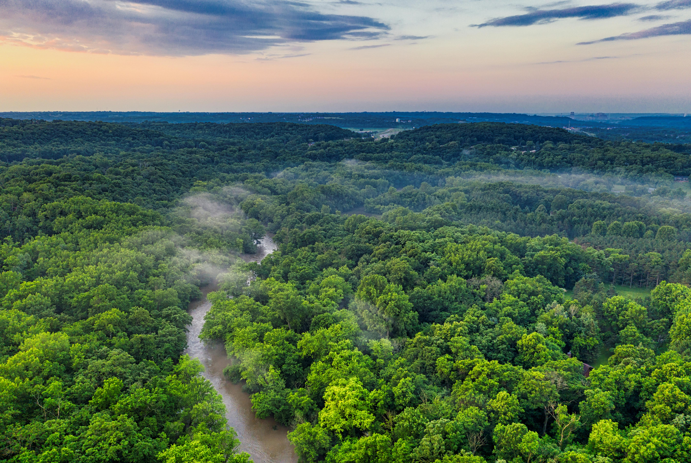

Explorando a Amazônia
Neste artigo, vamos nos aventurar pela vastidão da Amazônia, a maior floresta tropical do mundo. Descubra a riqueza da biodiversidade amazônica e leia mais sobre a importância da preservação desse ecossistema único.
Neste artigo, vamos nos aventurar pela vastidão da Amazônia, a maior floresta tropical do mundo. Descubra a riqueza da biodiversidade amazônica e leia mais sobre a importância da preservação desse ecossistema único.
Assista a este incrível vídeo da BBC Earth que nos leva a uma jornada pelo Great Barrier Reef, lar de uma incrível diversidade de vida marinha. Explore os corais coloridos e os habitantes fascinantes desses ecossistemas subaquáticos e leia mais.
Explore os gêiseres e paisagens deslumbrantes do Parque Nacional de Yellowstone e saiba mais.